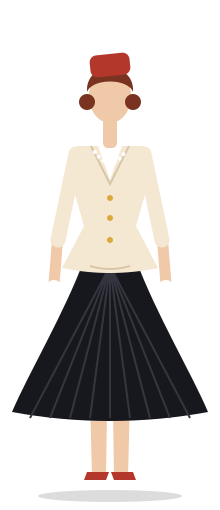
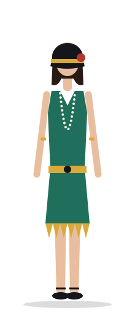
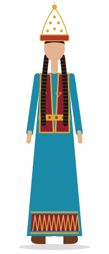
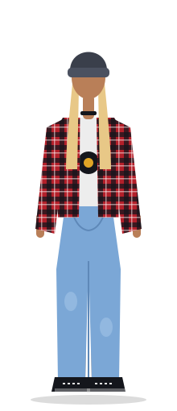
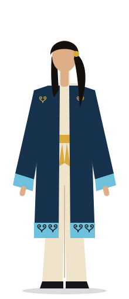

Paris
Sharp cuts, nipped waists and one perfect detail. From the Jazz Age to the New Look.
Explore ParisParis · Europe · America · Qazaqstan
Lis builds complete outfits from four wardrobes. Pick a place, pick a decade and wear the story, from a Paris flapper to a steppe modernist.


Four wardrobes

Sharp cuts, nipped waists and one perfect detail. From the Jazz Age to the New Look.
Explore ParisMod minis, flares and street-style rebellion. London, Milan and the open road.
Explore Europe

Velvet, gold thread and the ram's-horn ornament. Heritage, from the toi to today.
Explore QazaqstanHow Lis works
Paris, Europe, America or Qazaqstan. Each wardrobe has its own rules of cut, colour and detail.
Every era comes with a silhouette. Choose the twenties for fringe, the eighties for shoulders.
Take the key pieces from the lookbook, or answer the style quiz and we will point you to your match.
Qazaqstan spotlight
The koshkar-muiz is one of the best-loved Kazakh ornaments. In Lis it curls along hems, cuffs and belts, on a saukele for the toi or on a modern long coat.
That is the idea behind the studio: heritage is not a costume, it is a way of cutting a line.
See the Qazaqstan wardrobeAnswer a few questions about the place, the decade and the occasion.
Take the style quiz